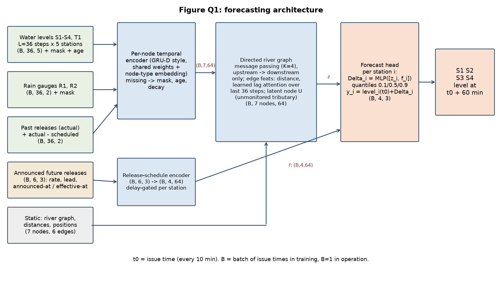
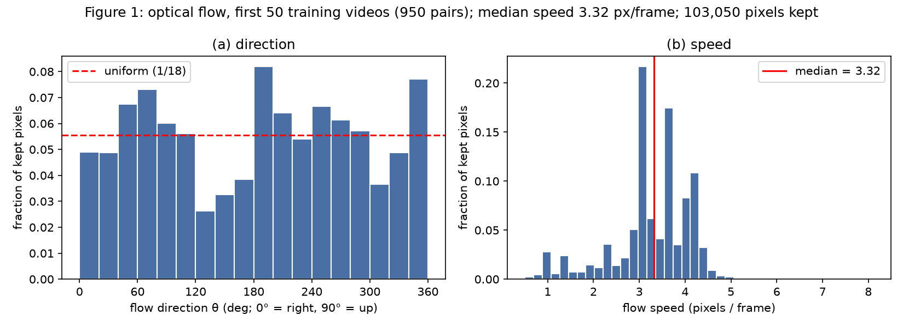
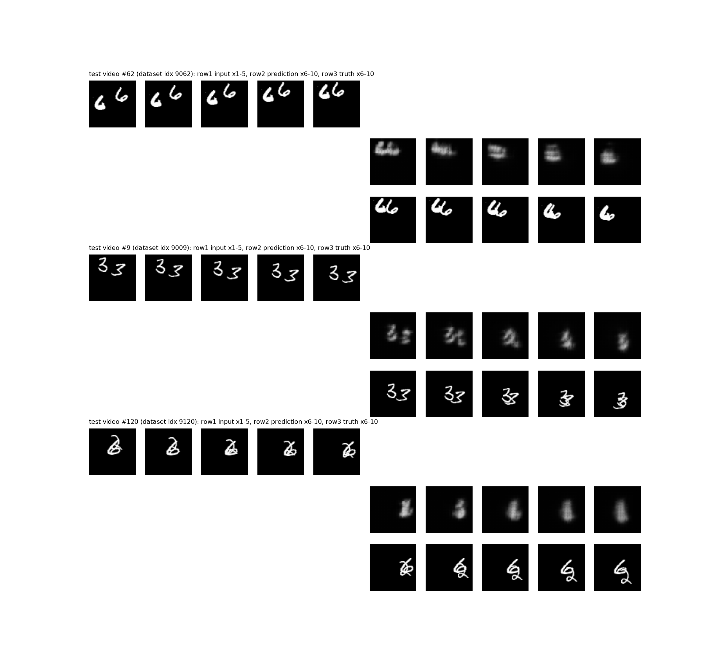
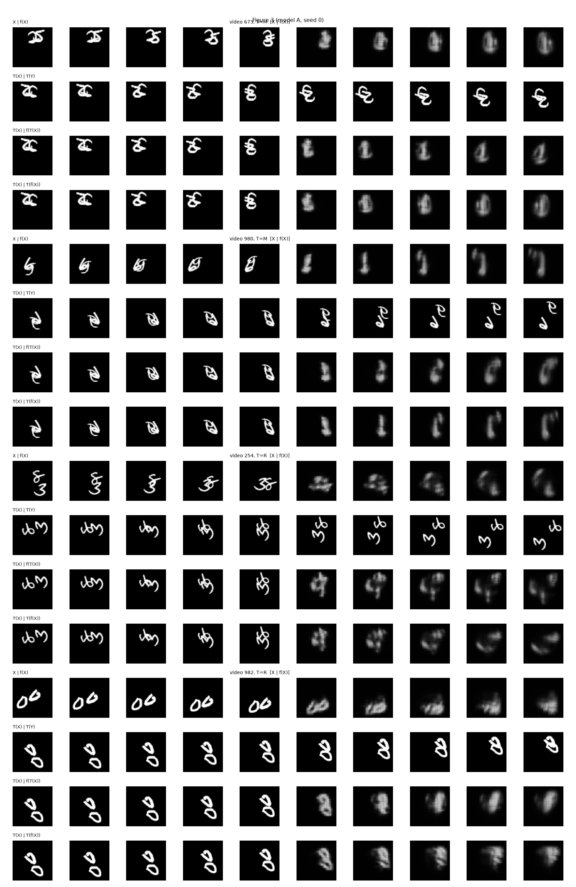
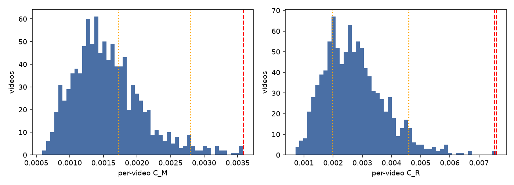
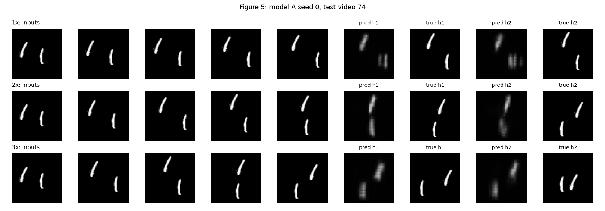
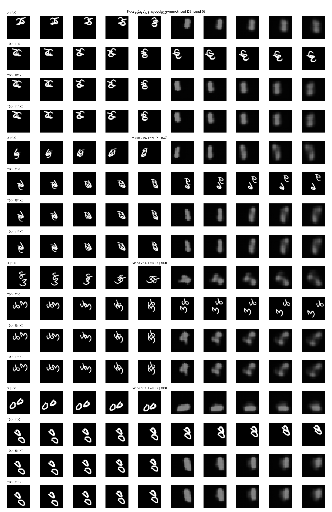
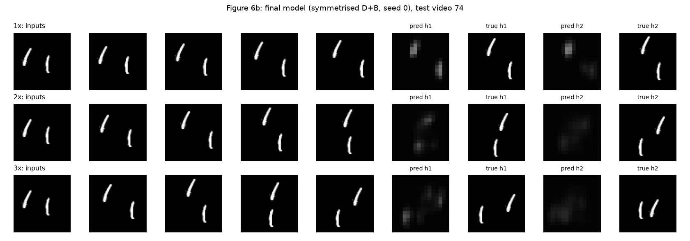

Student: [name / roll number — to be added]
Code repository (public): [GitHub link — to be added at submission]
All code, logs, GIFs and the committed predictions (Q2.5, Q2.11) are in the repository: q2/ (code, results), predictions/, report/.
Proposal in one line. A small directed-graph forecaster: each station is a node, a shared temporal encoder summarises its last 6 hours, messages flow only downstream along the river with learned, state-dependent travel delays, announced reservoir releases enter as known future inputs, and each station outputs the 60-minute level change with 10/50/90 % quantiles.

Alignment, projection and reshaping used to combine inputs: (i) all series are resampled to the 10-minute issue grid and stacked as (B, 36, node); (ii) a shared per-node GRU encoder with a node-type embedding projects every node's 36-step history to a 64-d vector, so levels, rain and release are all (B, 7, 64) after encoding; (iii) rain-gauge vectors are projected onto the river nodes with a learned distance kernel; (iv) the announced-release sequence (B, 6, 3) is projected to (B, 4, 64) (one vector per station, delay-gated, see Q4); (v) the head concatenates z_i and f_i to (B, 4, 128) and outputs (B, 4, 3).
Supplied facts (not assumptions): four main-river stations S1–S4 and tributary station T1; water levels every 10 min; rain gauges R1, R2; reservoir release record and announced future releases (with announcement and effective times); station positions, connectivity and along-river distances; no future rain or levels at issuance; the unmonitored tributary joins between S2 and S3; T1 joins between S1 and S2.
| # | Assumption | Why reasonable | Effect on design |
|---|---|---|---|
| A1 | Forecasts are issued at every 10-min tick t0 using only data that has *arrived* by t0. | Operational definition of the service. | Features carry both measurement time and arrival time. |
| A2 | Levels are in a common datum; each station has a stable level-to-discharge relationship over the training period. | Authority gauges are surveyed. | Model works in normalised level; no rating curve needed (requested in Q6 as an upgrade). |
| A3 | Reporting delay is 0–30 min for most sensors; 5 % of readings are missing and outages of 1–6 h occur. | Typical telemetry behaviour; unspecified in the brief. | Mask + age features, random delay/mask augmentation in training. |
| A4 | Measurement noise is about 1–2 cm with occasional spikes. | Typical for radar/pressure gauges. | Huber-type loss; median-filter spikes flagged by a z-score test. |
| A5 | Flow is one-directional along the river (no back-water except at flood stage). | Steep, confined river as pictured. | Message passing only upstream to downstream. Violations are covered in Q6. |
| A6 | Travel time between two stations is d / c, where wave speed c rises with discharge (higher level, faster travel). | Standard kinematic-wave behaviour. | Lag attention with a state-dependent speed prior rather than fixed lags. |
| A7 | The unmonitored tributary inflow is a lagged, smoothed response to the same rain that drives T1 and rain gauges. | It is a neighbouring catchment in the same region. | Latent node U driven by rain and T1; its inflow is never observed and shows up as uncertainty. |
| A8 | Rain falling over the next hour is unknown, but rain that already fell upstream is on its way. | Catchment response lags rainfall by tens of minutes to hours. | A 60-min horizon is mostly determined by past rain, upstream levels and the release schedule. |
| A9 | Announced releases are mostly honoured but may be late or differ in size. | Operational reality at dams. | Schedule enters as a feature together with a learned deviation process (Q5 iv). |
| A10 | Rain is a point value at R1 and R2 and represents the surrounding reach. | Only two gauges exist. | Learned distance kernel; the rain field's spatial error is carried as uncertainty. |
Issuance time. Every 10 minutes, t0 ∈ {…, 00:00, 00:10, …}. History window. L = 36 steps (6 h: t0−350 min … t0), which covers the travel time from reservoir to S4 under all but the slowest flows. Output. Water level at t0+60 min at S1–S4 (point forecast plus 10 %, 50 % and 90 % quantiles).
| Tensor | Shape | Axes | Time coverage / alignment |
|---|---|---|---|
Water levels W (S1–S4, T1) | (B, 36, 5) | batch of issue times, time step, station | measurement timestamps t0−350 … t0 on the 10-min grid; late arrivals inserted by *measurement* time |
Level mask & age m, a | (B, 36, 5) × 2 | same | m=1 if the reading had arrived by t0; a = minutes since last arrived reading |
Rain P (R1, R2) | (B, 36, 2) | batch, time, gauge | accumulation over each 10-min bin; mask as above |
Past release Q_act, deviation Q_act − Q_sched | (B, 36, 2) | batch, time, {actual, deviation} | measurement time |
Announced future releases Q_ann | (B, 6, 3) | batch, future step t0+10…t0+60, {scheduled rate, effective-minus-announced lead, hours since announcement} | only announcements with announcement time ≤ t0 |
Static graph G | 7 nodes, 6 edges | Res, S1, S2, T1, U, S3, S4 | distances d_ij, station positions, rain-gauge distances to nodes |
Output Ŷ | (B, 4, 3) | batch, station S1–S4, quantile {0.1, 0.5, 0.9} | level at t0+60 min; B = 1 in operation, B = batch of issue times in training |
Alignment. Stations are unevenly spaced and sampled on the same 10-min grid, so *time* is aligned by the grid and *space* by the graph: spatial offsets are not removed by shifting the series but handled by edge-wise lag attention (travel time ≈ d_ij / c). Missing times are kept as masked slots, never interpolated silently. Available at issuance: everything with arrival time ≤ t0 and the announced schedule up to t0. Not available: future rain, future levels at any station, release changes announced after t0.
Notation. Node i ∈ {Res, S1, S2, T1, U, S3, S4}, time step τ = 1…36, x_{i,τ} the node's input vector, ℓ_i(t0) the latest level, z_i the node state, e_ij the edge feature (distance d_ij, learned wave-speed prior), σ the sigmoid.
Temporal encoder (GRU-D style, shared). For observed readings the input is [ℓ, m, a, rain/release channels, node-type embedding]; for missing readings the value decays to the empirical mean: x̃ = m·x + (1−m)(γ x_last + (1−γ) x̄), with γ = exp(−max(0, W_γ a + b_γ)). Then h_{i,τ} = GRU(x̃_{i,τ}, h_{i,τ−1}).
Rain projection. p_i = Σ_g κ(d_{gi}) · P_g, with κ a learned positive kernel of gauge-to-node distance (soft-max-normalised over gauges); this gives each river node a rain input although there are only 2 gauges.
Directed message passing with state-dependent delay (K = 4 layers). For edge j → i, wave speed c_ij = c0_ij · softplus(w^T h_{j,36}) (faster when the upstream state is high), expected lag λ_ij = d_ij / c_ij. A lag-attention read picks the upstream history near that lag:
α_{ij,τ} = softmax_τ( −(t0 − τ·10min − λ_ij)² / 2s² ), r_ij = Σ_τ α_{ij,τ} h_{j,τ},
m_ij = φ([r_ij, h_{i,36}, e_ij]), z_i^{(k+1)} = z_i^{(k)} + ψ(z_i^{(k)}, Σ_{j→i} m_ij).
Messages go only from upstream to downstream, so after K = 4 layers S4 can use Res → S1 → S2 → S3 (the whole chain). The latent node U has no sensor; its state is produced by z_U = ψ_U(p_U, h_{T1,·}) (rain plus T1's behaviour), and it feeds S3 through an edge like any other.
Release schedule. For station i with reservoir-to-station travel time λ_{Res,i}, only schedule entries effective at t* ≤ t0 + 60 − λ_{Res,i} can influence its forecast. An announcement s with effective time e_s reaches station i at e_s + λ_{Res,i}, so the encoder uses the gate g_{i,s} = σ(ω (t0 + 60 min − e_s − λ_{Res,i})) (ω learned, large and positive), giving f_i = Σ_s g_{i,s} · u(Q_ann,s) with u an MLP. S1 therefore sees almost the whole schedule, S4 only its early part.
Forecast mapping. Δ_{i,q} = MLP_q([z_i, f_i]), ŷ_{i,q} = ℓ_i(t0) + Δ_{i,q}; predicting the *change* from the current level (a persistence baseline plus correction) makes the task easier and keeps the output on the right scale.
Training objective. L = Σ_i Σ_{q∈{.1,.5,.9}} ρ_q(y_i − ŷ_{i,q}) + β · Σ_i max(0, −∂ŷ_{i,.5}/∂Q_sched); ρ_q is the pinball loss; the second term is a hinge penalty asking more scheduled release not to lower downstream levels (a physical sign constraint). Random masking and delay noise (A3) and schedule perturbation (A9) are applied during training.
Justification. *Upstream conditions:* S_{i−1}, S_{i−2}, … reach S_i through lag-attended messages, because downstream levels one hour ahead mostly equal upstream levels one travel-time earlier. *Tributaries:* T1 is an input node joining the S1–S2 reach; the unmonitored one is latent node U. *Rainfall:* enters as projected rain p_i and drives U, with delay learned through the GRU histories. *Reservoir releases:* past actual releases through the encoder of the Res node, announced ones through f_i. Physical vs learned: the graph, direction of flow, the travel-time form λ = d/c and the sign constraint are physical; the wave-speed function, rainfall–runoff response, latent inflow and deviation behaviour are learned.
(i) Missing observations. A missing reading is not interpolated silently: the encoder gets m = 0 and age a, decays toward a mean (GRU-D), and the graph can use neighbours' lagged readings as a substitute (a station's level is largely predicted by its upstream neighbour). Training uses random single-sensor and burst masking (5–30 % of steps, bursts up to 6 h) so the model has seen such gaps. If a station is missing for more than 3 h, its forecast is flagged "degraded" and its quantile band is widened by a calibrated factor.
(ii) Delayed observations. Features are keyed on measurement time but include arrival status: at t0 only readings that have arrived are used; the age a tells the model how stale a station is. A late reading is slotted into its measurement time and used on the next cycle, and the previous forecast is not edited retroactively. Training simulates delays of 0–30 min.
(iii) Announced future releases. They are a known-future input (the only one). The announcement time and effective time are both input (lead, hours since announcement), only announcements made by t0 are used, and the delay-gate (Q4) restricts each station to the part of the schedule that can reach it within 60 min. If a release is announced after t0, it is picked up at the next 10-min cycle.
(iv) Scheduled vs actual releases. The past Q_act − Q_sched deviation is an input; the model learns from history that deviations persist and decay toward the schedule. For the forecast hour, it is assumed that the latest observed deviation decays to zero with the learned time constant, and the quantile band widens in proportion to the recent deviation. If the actual release meter is unavailable, the deviation is inferred from the S1 level (a jump at S1 that the schedule does not explain).
Feasibility every 10 minutes. About 1–2 M parameters, 7 nodes, 36 steps and 4 message layers: one forward pass takes milliseconds on a CPU, far below the 10-minute budget, so the pipeline is limited by data arrival, not compute. Operation: pull arrived data → build tensors → infer → publish with a timestamp; if any step fails, the previous forecast is re-served with an age flag. The model is retrained periodically (e.g. monthly or after a flood season), and a simple persistence-plus-schedule baseline runs alongside as a monitor and fallback.
| Uncertainty / limitation | Forecast impact | Response / unresolved |
|---|---|---|
| Unmonitored tributary (between S2 and S3) | Unexplained inflow after rain: S3 and S4 under-forecast during storms, the error larger as rain intensity rises | Latent node U driven by rain and T1; the 10–90 % band widens when rain is high. Unresolved: its actual flow; only partially identifiable from S3 − S2 differences. |
| Changing travel times | Fixed lags would misalign upstream signals (late in low flow, early in floods) | State-dependent wave speed and lag attention (Q4). Unresolved for extreme floods outside the training range. |
| Future rain in the next hour | Rain that falls after t0 over the nearby catchment is not known; largest effect on S2–S4 within about 30–60 min | Quantile bands; wider when recent rain is high. Unresolved without a rainfall forecast. |
| Only two rain gauges | Rain field estimated badly, e.g. a storm cell missing both gauges | Distance kernel; wider quantiles. See request 1. |
| Sensor error / drift / outages | Wrong history values give wrong forecasts | Spike filter, mask augmentation, "degraded" flag. |
| Release deviates from the announced schedule | Direct error at S1, propagated downstream with delay | Deviation input and widening band (Q5 iv). |
| Backwater from the downstream bridge/town at high stage | Violates one-way flow (A5); S4 may behave differently | Unresolved; high-stage cases are rare in training; flag forecasts above the historical maximum as low-confidence. |
| Non-stationarity (channel change, seasons) | Slow drift in accuracy | Periodic retraining; monitoring of residuals. |
Additional information requests (availability not guaranteed; the system must remain usable without each):
1. Radar rainfall or short-term rain forecast (areal, 0–60 min). Helps with the future-rain and sparse-gauge problems; without it, the system stays usable with wider bands during rain.
2. Flow or level estimates (even sparse) for the unmonitored tributary — a temporary gauge or a few discharge gaugings, plus its catchment area. Turns U from fully latent to partly supervised; without it, U stays latent and S3/S4 uncertainty after rain stays high.
3. Rating curves / cross-sections at S1–S4 and T1. Allows modelling in discharge and a sharper travel-time model; without them, level-based modelling works (A2).
4. Real-time actual release meter readings with timestamps. Replaces the inference of release deviation from S1 levels; the fallback is that inference.
5. Telemetry arrival logs (when each reading arrived). Allows the delay model to be fitted exactly; without it, A3 is used.
Setup: Moving MNIST (10,000 videos); videos 0–7,999 train, 8,000–8,999 validation, 9,000–9,999 test; frames scaled to [0,1]. Every learned model uses the handout's protocol (Adam 1e-3, batch 32, 30 epochs, seeds 0 and 1, free-running 9-step rollout, masked loss). Hardware: RTX 5070 12 GB, PyTorch 2.11 (CUDA 12.8). Tables show mean(seed 0, seed 1) in bold with each seed beneath; figures, GIFs and per-video analyses use the seed-0 model. The test split was used only for evaluation; model D's design was chosen on validation (Table D).
| Check | Expected | Yours | |
|---|---|---|---|
| (a) | max|M(M(x)) − x| | 0 | 0 (torch.equal: True) |
| (b) | max|R⁴(x) − x| | 0 | 0 (torch.equal: True) |
| (c) | max|MRM(x) − R⁻¹(x)| | 0 | 0 (torch.equal: True) |
| (d) | bright pixel of M(p) (frame, row, col) | (7, 10, 43) | (7, 10, 43) |
| (e) | bright pixel of R(p) (frame, row, col) | (7, 43, 10) | (7, 43, 10) |
| (f) | 1× input / target frames | 1–5 / 6–10 | [1, 2, 3, 4, 5] / [6, 7, 8, 9, 10] |
| (g) | 2× input / target frames | 1,3,5,7,9 / 11,13,15,17,19 | [1, 3, 5, 7, 9] / [11, 13, 15, 17, 19] |
| (h) | 3× input / target frames | 1,4,7,10,13 / 16,19 | [1, 4, 7, 10, 13] / [16, 19] |
All eight checks match the expected values (maximum absolute differences are exactly 0 and torch.equal returns True).

Mirrored and rotated trajectories already look familiar. A mirror maps a flow direction θ to 180° − θ, and a 90° rotation maps θ to θ + 90°. If every training video were mirrored or rotated, the histogram would be concentrated around particular angles; in Figure 1(a) every one of the 18 bins contains substantial mass: the smallest bin holds 0.0263 of the pixels (120–140°, about half the uniform level 0.0556) and the largest 0.0820 (180–200°). The histogram is not perfectly flat (only 50 videos), but no direction is missing, so the mirrored and rotated versions of the training motion are directions the model has already seen (its motion is, at least approximately, direction-isotropic). Typical speed is the median 3.32 px/frame (5–95 % range 1.41–4.32 px/frame; Figure 1(b) shows almost no flow above 5 px/frame). Hence 2× corresponds to about 2 × 3.32 ≈ 6.64 px/frame and 3× to ≈ 9.95 px/frame, i.e. beyond everything in the training data at 1×. Overlaps: optical flow is unreliable where the digits overlap (they pass through each other, so intensities blend and the flow can be wrong). That affects a small fraction of the kept pixels, and it could blur the histogram or shift a few pixels in magnitude; it cannot fill the empty direction range or move the median from ≈3.3 to ≈6.6 px/frame, so the conclusions (all directions present, speeds ≈ 3–4 px/frame) would not change. A caveat in the other direction: Farneback with a 15-pixel window tends to underestimate large displacements, which would, if anything, make the true speeds somewhat higher than shown.
Mirror changes the appearance (a mirrored 2 is not a 2) but not the motion statistics: speeds are unchanged and directions are mapped to 180° − θ, which the training data already contains (Q2.1). Rotation changes the appearance even more (strokes become sideways) and, again, leaves the speed distribution unchanged and rotates the directions by 90°, which is also covered by the training data. Speed-up changes the motion only: the digits look exactly as before, but they move k times further per frame, to speeds (≈6.6 and ≈10 px/frame) not in the training data. This makes the three transformations a controlled experiment: mirror/rotation vary appearance with (almost) fixed motion, speed-up varies motion with fixed appearance, so a failure under one but not the other tells us which factor the model depends on.
| Predictor | MSE₁ | MSE₂ | MSE₃ | MSE₄ | MSE₅ | E⁽⁵⁾ | Params |
|---|---|---|---|---|---|---|---|
| Model A, mean(seed 0, seed 1) | 0.0170 | 0.0203 | 0.0226 | 0.0243 | 0.0260 | 0.0220 | 480,784 |
| seed 0 | 0.0175 | 0.0209 | 0.0231 | 0.0248 | 0.0264 | 0.0225 | 480,784 |
| seed 1 | 0.0165 | 0.0198 | 0.0221 | 0.0238 | 0.0256 | 0.0216 | 480,784 |
| Blank | 0.0426 | 0.0426 | 0.0426 | 0.0425 | 0.0425 | 0.0426 | 0 |
| Copy-last | 0.0492 | 0.0604 | 0.0669 | 0.0708 | 0.0732 | 0.0641 | 0 |
Model A has exactly 480,784 trainable parameters (184,576 in layer 1, 295,168 in layer 2, 1,040 in the 1×1 convolution), matching the handout.

Reach of model A = 8 original pixels per time step. Work in the folded 16×16 grid, where one cell is 4 original pixels (centre-to-centre; the 4×4 patch width is not added). Only the 3×3 convolutions move information (radius 1 cell each); the 1×1 output convolution, pixel_unshuffle and pixel_shuffle do not. Paths within one step τ: (i) from the new input u_τ: layer-1 input convolution (1 cell) then layer-2 input convolution on h⁽¹⁾_τ (1 cell) = 2 cells; (ii) from the previous state h⁽¹⁾_τ₋₁: layer-1 recurrent convolution (1 cell), then layer-2's input convolution (1 cell) = 2 cells; (iii) from h⁽²⁾_τ₋₁: layer-2 recurrent convolution only = 1 cell. The longest path is 2 cells = 2 × 4 = 8 px. (Over several steps information can travel further, but a digit moving more than 8 px between consecutive frames cannot be connected in a single update.) Compared with the typical speed of 3.3 px/frame (Figure 1) the reach is comfortable at 1×, marginal at 2× (≈6.6 px), and too small at 3× (≈10 px).
Model A (E⁽⁵⁾ = 0.0220, mean of seeds) is well below both references: 48.2 % lower than Blank (0.0426) and 65.6 % lower than Copy-last (0.0641). Its error grows with the horizon: MSE₁ = 0.0170 to MSE₅ = 0.0260 (+52%); Copy-last grows faster (0.0492 to 0.0732, +49%) while Blank is flat at ≈0.0426. A stays below Blank at all five horizons, but the gap narrows (MSE₅ is 61.1 % of Blank's). In Figure 2 the predictions are blurry blobs whose position is roughly right but whose shape is lost, and they get fuzzier with the horizon. When digits overlap (video #120) the prediction is a single vertical smear: the model does not keep two digits apart, so it cannot let them pass through each other and emerge on the other side.
Evidence available when this was written: Table 1, Figure 1, Table 2, Figure 2 (model A trained; nothing about mirror/rotation/speed evaluated yet).
Reach. Model A's one-step reach is 8 original pixels (2 folded cells x 4 px: the longest path is u_t -> layer-1 3x3 -> layer-2 3x3, or h1_{t-1} -> layer-1 recurrent 3x3 -> layer-2 input 3x3; the layer-2 recurrence alone gives only 1 cell = 4 px). Figure 1(b): typical speed is about 3.3 px/frame, so 2x is about 6.6 px/frame and 3x about 10 px/frame.
Mirror test: I expect model A to pass it only approximately (C_M clearly above zero, but much smaller than the error of the Blank predictor, so "mostly consistent"). Figure 1(a) is not concentrated in one direction, so mirrored trajectories are not new motion; only the digit shapes change, and A's predictions are already blurry blobs that depend little on exact digit identity.
Rotation test: I expect A to do slightly worse than on the mirror test (C_R > C_M, E_R > E_M), because rotated digits look even less like the training digits, and because the training flow histogram is not perfectly isotropic, so some rotated directions are over/under-represented. It will not fail catastrophically, since 3.3 px/frame is well inside the 8 px reach.
Speed. 1x (3.3 px/frame) is inside reach: fine. 2x (about 6.6 px/frame) is close to the 8 px limit: I expect a visible degradation, with errors growing and digits blurring / lagging. 3x (about 10 px/frame) exceeds the reach: I expect breakdown (digit stalls, duplicates or vanishes; E^(2) close to or worse than Copy-last/Blank).
Committed before the Section 3 experiments were run (git commit 7752ac2, 2026-10-26 14:37). Outcome: mirror and rotation were as predicted (rotation gap larger than mirror gap, both small); the speed prediction was too optimistic: 2× already degrades to Blank level (Table 4).
| Predictor | E⁽⁵⁾ | C_M | E_M | C_R | E_R |
|---|---|---|---|---|---|
| Model A, mean(seed 0, seed 1) | 0.0220 | 0.00192 | 0.0227 | 0.00311 | 0.0238 |
| seed 0 | 0.0225 | 0.00157 | 0.0230 | 0.00274 | 0.0241 |
| seed 1 | 0.0216 | 0.00228 | 0.0223 | 0.00348 | 0.0235 |
| Blank | 0.0426 | 0 | 0.0426 | 0 | 0.0426 |
| Copy-last | 0.0641 | 0 | 0.0641 | 0 | 0.0641 |


Blank and Copy-last are exactly consistent (C_M = C_R = 0) because they act pixel by pixel and in a symmetric way, so transforming first or last gives identical outputs — yet they are poor predictors (E⁽⁵⁾ = 0.0426 and 0.0641). So a small C_T on its own says only that the model treats a scene and its transformed copy alike; it does not say that either prediction is right. A model can be perfectly consistent and wrong. E_T = MSE(f(T(X)), T(Y)) compares the prediction on the transformed scene with the correct answer, so it must always be reported next to C_T. For model A, C_M = 0.00192 and C_R = 0.00311 are small next to E⁽⁵⁾ = 0.0220, while E_M = 0.0227 and E_R = 0.0238 are within 8.09 % of E⁽⁵⁾.
Video 980 (dataset index 9980), T = M (Figure 3, second block). The true future (row 2) shows the two overlapping digits separating: one piece moves up and to the right while the other continues lower down, so two recognisable shapes appear. Row 4 (the mirror of the prediction on the original input) is a narrow vertical streak that stays thin with a short tail at the top: the model's account is that the digits stay merged in one place and fade. Row 3 (prediction on the mirrored input) is a blob that starts compact and then bends into a curved, wider crescent drifting to one side. So, with the same motion seen in a mirrored scene, the model's account changes from a digit-pair that blurs into one narrow smear in place to a blob that curves and spreads; neither shows the two digits parting, and in both the digit shapes blur into something unrecognisable.
Rotation is harder than mirroring, but only modestly: for model A, C_R = 0.00311 against C_M = 0.00192 (1.62×), and E_R = 0.0238 against E_M = 0.0227; the same ordering holds for each seed (Table 3), and Figure 4 shows a heavier tail for C_R. By Q2.1 and Q2.2 the motion statistics are about equally familiar under both transformations (all directions occur, speeds unchanged), so I attribute most of the difference to appearance: a rotated digit is further from anything in the training set than a mirrored one (mirror keeps the stroke orientation statistics, rotation turns vertical strokes into horizontal ones), and model A's blob-like predictions depend on those shapes. Motion cannot be fully excluded, because Figure 1(a) is not perfectly flat (some of the 50-video sample's directions are under-represented), but model B supports the appearance reading: symmetry augmentation, which changes only appearance and direction labels, lowers C_R from 0.00311 to 0.00165 (-47%) and C_M from 0.00192 to 0.00130 (-33%) (Table 5).
Faster motion.
| Predictor | E⁽²⁾ 1× | E⁽²⁾ 2× | E⁽²⁾ 3× | E⁽⁵⁾ 1× | E⁽⁵⁾ 2× |
|---|---|---|---|---|---|
| Model A, mean(seed 0, seed 1) | 0.0187 | 0.0448 | 0.0520 | 0.0220 | 0.0496 |
| seed 0 | 0.0192 | 0.0429 | 0.0497 | 0.0225 | 0.0468 |
| seed 1 | 0.0182 | 0.0467 | 0.0543 | 0.0216 | 0.0523 |
| Copy-last | 0.0548 | 0.0661 | 0.0703 | 0.0641 | 0.0719 |

Model A falls apart at 2×, earlier than the reach estimate suggested. E⁽²⁾ is 0.0187 at 1×, 0.0448 at 2× and 0.0520 at 3× (Table 4); at 2× it is already no better than Blank (E⁽²⁾ = 0.0426) and at 3× it is clearly worse than Blank, though still better than Copy-last (0.0703). The reach of 8 px (Q2.3) suggested that 2× (≈6.6 px/frame) would be marginal and 3× (≈10 px) would fail; the measurement is worse than that. What the estimate missed is that 8 px is an upper bound reached only along the longest path (input → layer 1 → layer 2); the recurrent route that carries the digit's old position (h⁽²⁾ → h⁽²⁾) reaches only 4 px, and the ends of the 3×3 kernels see a digit's stroke only partially, so reliable tracking works for displacements clearly below 8 px, not at 6–7 px. In Figure 5 (video 74): at 1× the two digits are in about the right place but blurred; at 2× the prediction is a smeared vertical streak that spans the gap between where a digit was and where it goes, i.e. a duplicated / blurred digit between old and new positions rather than a digit at the new position; at 3× the blobs sit near the digits' last input positions and the true digits (which have moved much further, and by h2 are close together) are missing, i.e. the digits stall at the old positions. This suggests that when the new position falls outside what the network can connect to the old one, it cannot follow the digit, and hedges (averaging possible positions → blur) or copies its last state (stalling).
No. Both explanations predict the same symptom (A fails at 2× and 3×): fast motion is missing from the training data and exceeds A's reach, so the speed failure of A alone cannot separate them. Experiment: hold one factor fixed and vary the other. (1) Data fixed, architecture varied: train the larger-reach network of model D on 1× data only (no speed augmentation) and test it at 2× and 3×; if it keeps up where A does not, reach was the limit. (2) Architecture fixed, data varied: train A with speed augmentation (this is model C) and test at 2× and 3×; if it improves a lot, unfamiliar motion was the problem. A further check: speeds seen at neither training nor reach (e.g. 4×) and a non-integer speed such as 1.5× (made by interpolation, so the same frames are not skipped) to show how the models extrapolate or interpolate.
Model D design. Candidate designs (all keeping A's input/output shapes, 9-step free-running rollout and training protocol; params ≤ 721,176; no attention) were trained with speed augmentation and compared on the validation split only. The dilated candidates are a cautionary tale: with dilation 2/3 in the second layer (d23, d33) the training stalled at the Blank level (validation E⁽²⁾ ≈ 0.0375) and d22 was clearly worse on 1× than A; the dense larger kernels worked better.
| Candidate | Hidden | Kernels | Dilations | Reach (px) | val E⁽²⁾ 1× | 2× | 3× | Sum |
|---|---|---|---|---|---|---|---|---|
| d22 | 64 | [3, 3] | [2, 2] | 16 | 0.0301 | 0.0320 | 0.0339 | 0.0960 |
| d23 | 64 | [3, 3] | [2, 3] | 20 | 0.0375 | 0.0375 | 0.0375 | 0.112 |
| d33 | 64 | [3, 3] | [3, 3] | 24 | 0.0375 | 0.0375 | 0.0375 | 0.112 |
| k35_h48 | 48 | [3, 5] | [1, 1] | 12 | 0.0286 | 0.0317 | 0.0341 | 0.0944 |
| k55_h40 | 40 | [5, 5] | [1, 1] | 16 | 0.0305 | 0.0325 | 0.0347 | 0.0977 |
Failures seen in Testing the Baseline (model A): mirror/rotation consistency gaps are small but nonzero (rotation a bit worse than mirror); speed is the big failure, E^(2) at 2x is already close to Blank and at 3x close to Blank, with blurred / lost digits.
B (symmetry augmentation) should shrink C_M, C_R and the transformed errors but will not fix speed. C (speed augmentation) should help 2x clearly but stay poor at 3x, because 3x motion (about 10 px/frame) exceeds A's 8 px reach however much data it sees. D (larger reach plus speed augmentation) should be the only model that fixes 3x, so it should beat C at 3x while costing little at 1x.
Committed before B–D were trained (git commit fb01da2, 2026-10-26 14:38). Outcome: B did not fix speed and reduced the consistency gaps (as predicted); C fixed most of the 2× and 3× failure (I predicted it would stay poor at 3×); D was only slightly better than C at 3× (I predicted a clear win).
| Model | E⁽⁵⁾ (1×) | C_M | E_M | C_R | E_R |
|---|---|---|---|---|---|
| A, mean | 0.0220 | 0.00192 | 0.0227 | 0.00311 | 0.0238 |
| seed 0 | 0.0225 | 0.00157 | 0.0230 | 0.00274 | 0.0241 |
| seed 1 | 0.0216 | 0.00228 | 0.0223 | 0.00348 | 0.0235 |
| B, mean | 0.0222 | 0.00130 | 0.0223 | 0.00165 | 0.0222 |
| seed 0 | 0.0229 | 0.00122 | 0.0229 | 0.00158 | 0.0228 |
| seed 1 | 0.0216 | 0.00138 | 0.0216 | 0.00172 | 0.0216 |
| C, mean | 0.0269 | 0.00150 | 0.0272 | 0.00283 | 0.0282 |
| seed 0 | 0.0274 | 0.00173 | 0.0277 | 0.00266 | 0.0286 |
| seed 1 | 0.0264 | 0.00126 | 0.0266 | 0.00299 | 0.0277 |
| D, mean | 0.0272 | 8.67e-4 | 0.0274 | 0.00190 | 0.0281 |
| seed 0 | 0.0277 | 8.46e-4 | 0.0279 | 0.00156 | 0.0284 |
| seed 1 | 0.0266 | 8.89e-4 | 0.0268 | 0.00225 | 0.0278 |
| D+B, mean | 0.0274 | 0.00100 | 0.0274 | 8.66e-4 | 0.0273 |
| seed 0 | 0.0274 | 7.75e-4 | 0.0274 | 8.54e-4 | 0.0273 |
| seed 1 | 0.0274 | 0.00123 | 0.0274 | 8.78e-4 | 0.0274 |
| Model | E⁽²⁾ 1× | E⁽²⁾ 2× | E⁽²⁾ 3× | Params | Train s/epoch | Inference s |
|---|---|---|---|---|---|---|
| A, mean | 0.0187 | 0.0448 | 0.0520 | 480,784 | 9.15 | 0.152 |
| seed 0 | 0.0192 | 0.0429 | 0.0497 | 480,784 | 9.20 | 0.150 |
| seed 1 | 0.0182 | 0.0467 | 0.0543 | 480,784 | 9.11 | 0.154 |
| B, mean | 0.0185 | 0.0443 | 0.0510 | 480,784 | 10.1 | 0.149 |
| seed 0 | 0.0189 | 0.0441 | 0.0503 | 480,784 | 9.95 | 0.145 |
| seed 1 | 0.0181 | 0.0445 | 0.0516 | 480,784 | 10.2 | 0.153 |
| C, mean | 0.0234 | 0.0289 | 0.0335 | 480,784 | 8.94 | 0.160 |
| seed 0 | 0.0238 | 0.0290 | 0.0334 | 480,784 | 8.94 | 0.162 |
| seed 1 | 0.0229 | 0.0288 | 0.0336 | 480,784 | 8.94 | 0.158 |
| D, mean | 0.0243 | 0.0284 | 0.0321 | 572,560 | 9.25 | 0.140 |
| seed 0 | 0.0249 | 0.0285 | 0.0321 | 572,560 | 9.00 | 0.152 |
| seed 1 | 0.0237 | 0.0283 | 0.0322 | 572,560 | 9.49 | 0.128 |
| D+B, mean | 0.0244 | 0.0286 | 0.0322 | 572,560 | 8.10 | 0.148 |
| seed 0 | 0.0246 | 0.0287 | 0.0321 | 572,560 | 9.78 | 0.151 |
| seed 1 | 0.0243 | 0.0285 | 0.0322 | 572,560 | 6.43 | 0.146 |
Model D is model A with the same shapes, folding (pixel-unshuffle 4), 9-step free-running rollout and training protocol, but with a wider kernel in the second ConvLSTM layer and a narrower hidden width to stay within the parameter budget: layer 1 = ConvLSTM, 16 → 48 channels, 3×3 kernel; layer 2 = ConvLSTM, 48 → 48 channels, 5×5 kernel; 1×1 convolution 48 → 16, pixel-shuffle(4), sigmoid. It has 572,560 trainable parameters (≤ 721,176). Reach (same convention as Q2.3): layer-1 radius 1 cell, layer-2 radius 2 cells. From u_τ: layer 1 (1) + layer 2 (2) = 3 cells; from h⁽¹⁾_τ₋₁: layer-1 recurrent (1) + layer-2 input (2) = 3 cells; from h⁽²⁾_τ₋₁: layer-2 recurrent (2) = 2 cells. The longest path is 3 cells = 3 × 4 = 12 px, strictly larger than model A's 8 px. (Even model D's recurrent path, 8 px, matches the whole of A.)
Appearance (mirror / rotation failure): model B, which changes only appearance, lowers C_M by -33% and C_R by -47% (Table 5) with no change in speed behaviour (E⁽²⁾ at 3×: 0.0510 vs 0.0520); symmetrisation (Table 6) removes it completely. Unfamiliar motion (speed failure at 2× and 3×): model C, same architecture as A but trained on speeds 1–3×, lowers E⁽²⁾ from 0.0448 to 0.0289 at 2× (-35%) and from 0.0520 to 0.0335 at 3× (-36%); at 3× the model goes from worse than Blank (0.0426) to better. Architectural reach: comparing D with C (same data), E⁽²⁾ improves only from 0.0335 to 0.0321 at 3× (-4%) and from 0.0289 to 0.0284 at 2×: a small effect. So in these results the speed failure of A was mainly unfamiliar motion, with a minor reach component. If C still did badly at 3× while D did well (not what we found), that would show the failure is architectural: C and D see exactly the same data, so the only difference is which input pixels can influence an output pixel in one step. More training data cannot extend that: training changes the function computed from the inputs that are connected, but not the set of connected inputs; if the new position of a digit lies outside the one-step reach of its old position, no weights can link them in one update. A caveat on the whole picture: even C and D remain far worse at 3× (E⁽²⁾ ≈ 0.032–0.034) than at 1× (≈ 0.023–0.024), so some of the 3× difficulty is not explained by either factor (scored frames are further apart in time at 3×, so the prediction itself is harder).
Yes, speed augmentation costs accuracy on the original 1× clips: E⁽⁵⁾ at 1× rises from 0.0220 (A) to 0.0269 (C, +22%), 0.0272 (D, +23%) and 0.0274 (D+B, +24%); E⁽²⁾ at 1× rises from 0.0187 to 0.0234 / 0.0243 / 0.0244. Symmetry augmentation (B) costs nothing (0.0222). The loss is expected: only about a third of the training windows are 1×, and the same capacity must cover three speeds. It was worth it: averaged over the three speeds, E⁽²⁾ is 0.0385 for A against 0.0284 for D+B, a gain of 26.2 %, at a 1× cost of about 0.005. Whether it is worth it in practice depends on whether faster motion occurs at test time; if the application is purely 1×, model A (or B) is the better choice.
Proof that f̄ is exactly consistent. G is a group (the 8 symmetries of the square), so for h ∈ G: f̄(hX) = (1/8) Σ_g g⁻¹(f(g h X)). Substituting g′ = g h (a bijection of G, so g = g′h⁻¹ and g⁻¹ = h g′⁻¹) gives f̄(hX) = (1/8) Σ_g′ h g′⁻¹(f(g′X)) = h · f̄(X), because h is a linear pixel permutation and so commutes with the average. Taking h = M or R gives f̄(T(X)) = T(f̄(X)), i.e. C_M = C_R = 0. In the implementation the same eight terms are summed in a different order, so the result differs only by floating-point rounding (≈10⁻¹⁷ in Table 6).
Choice of final model. I trained the optional D+B. Table 5 supports it: its E⁽⁵⁾ (0.0274) and E⁽²⁾ at all speeds are practically equal to D's (0.0272), its C_R is less than half of D's (8.66e-4 vs 0.00190) and its C_M is about the same (0.00100 vs 8.67e-4), so symmetrisation starts from a model that is at least as close to symmetric; the gain is small, which is why the choice is not critical. The final model is therefore symmetrised D+B.
| Model | E⁽⁵⁾ | C_M | E_M | C_R | E_R | E⁽²⁾ 1× | E⁽²⁾ 2× | E⁽²⁾ 3× | Params | Train s/ep | Infer s |
|---|---|---|---|---|---|---|---|---|---|---|---|
| Symmetrised B, mean | 0.0216 | 8.38e-17 | 0.0216 | 6.75e-17 | 0.0216 | 0.0180 | 0.0433 | 0.0495 | 480,784 | 10.1 | 1.23 |
| seed 0 | 0.0222 | 7.51e-17 | 0.0222 | 6.04e-17 | 0.0222 | 0.0183 | 0.0431 | 0.0490 | 480,784 | 9.95 | 1.22 |
| seed 1 | 0.0209 | 9.26e-17 | 0.0209 | 7.46e-17 | 0.0209 | 0.0177 | 0.0435 | 0.0500 | 480,784 | 10.2 | 1.25 |
| Symmetrised D, mean | 0.0271 | 5.05e-17 | 0.0271 | 3.89e-17 | 0.0271 | 0.0242 | 0.0283 | 0.0319 | 572,560 | 9.25 | 1.21 |
| seed 0 | 0.0276 | 4.42e-17 | 0.0276 | 3.21e-17 | 0.0276 | 0.0248 | 0.0284 | 0.0318 | 572,560 | 9.00 | 1.20 |
| seed 1 | 0.0265 | 5.68e-17 | 0.0265 | 4.58e-17 | 0.0265 | 0.0236 | 0.0283 | 0.0321 | 572,560 | 9.49 | 1.21 |
| Final: symmetrised D+B, mean | 0.0270 | 5.73e-17 | 0.0270 | 4.46e-17 | 0.0270 | 0.0242 | 0.0283 | 0.0319 | 572,560 | 8.10 | 1.21 |
| seed 0 | 0.0270 | 5.83e-17 | 0.0270 | 4.40e-17 | 0.0270 | 0.0243 | 0.0284 | 0.0318 | 572,560 | 9.78 | 1.22 |
| seed 1 | 0.0270 | 5.62e-17 | 0.0270 | 4.52e-17 | 0.0270 | 0.0241 | 0.0282 | 0.0320 | 572,560 | 6.43 | 1.20 |


Learned symmetry (B) reduces the gaps (C_M 0.00192 → 0.00130, C_R 0.00311 → 0.00165) but they remain non-zero; it costs no inference time but about 9.86 % more training time per epoch (10.1 vs 9.15 s), and its accuracy on original clips is unchanged (E⁽⁵⁾ 0.0222 vs 0.0220). Built-in symmetry (symmetrised B) gives C_M = C_R = 0 (≈10⁻¹⁷) exactly, by the proof above (it is a property of the wrapper and holds for any f), so E_M = E_R = E⁽⁵⁾; accuracy on original clips is slightly better, E⁽⁵⁾ = 0.0216 vs 0.0222 (averaging eight predictions reduces variance). The price is inference: 1.23 s vs 0.149 s for the 1,000 test videos (≈8.27×). For D+B the gain is 0.0270 vs 0.0274. When averaging can hurt: when the true dynamics are not symmetric (e.g. gravity, a preferred direction, or text with a reading order), forcing equal weights on the eight orientations blends in wrong-orientation predictions and blurs sharp structure. Here the Moving-MNIST dynamics are symmetric and accuracy did not get worse (it improved slightly), although the final model's predictions in Figure 6a/6b are visibly blurrier than model A's in Figure 3/5, which is consistent with the lower sharpness that averaging and speed augmentation produce.
No, not fully. In Figure 6a (video 980, T = M) rows 3 and 4 are now identical: the disagreement between f(T(X)) and T(f(X)) seen for model A is gone, and that is what symmetrisation fixes (exact consistency, C_M = 0). What is not fixed is the account of the motion itself: both rows are a featureless grey vertical blob that drifts and spreads slightly, with no sign of the two digits separating and no recognisable digit shapes; the true future (row 2) still shows two distinct shapes parting. The speed-related changes (speed augmentation and larger reach) are not visible on this 1× clip, but they appear in Figure 6b (final model vs Figure 5): at 2× and 3× the final model's predictions are still very blurred (diffuse mass around the region where the digits are), and the lower E⁽²⁾ at 2×/3× (0.0286, 0.0322 vs 0.0448, 0.0520 for A) reflects mostly a better-placed blur rather than sharp digits. Overall: the consistency failure was fixed by the symmetrised wrapper (with B-augmentation helping), the speed failure was mostly fixed by speed augmentation (D's larger reach adding little), and the blur / loss of digit identity was not fixed, and 1× accuracy got worse.
Partly. The final model beats Blank and Copy-last at every speed (E⁽²⁾ at 3× = 0.0322 vs 0.0426 and 0.0703), is exactly mirror/rotation-consistent, and tolerates 2× and 3× playback far better than A: more than memorising 1× clips, though speed augmentation puts those speeds in training. But its predictions are blurry, shapeless blobs, 1× accuracy is worse than model A's, and the digits never separate cleanly after overlap. A sceptic would want unseen speeds (1.5×, 4×), unseen shapes (letters, other digits sets) and time-reversed clips at similar error, with sharp rather than hedged predictions. The unpassed test: speed 4× (≈13 px/frame), beyond both the training speeds and the reach of 12 px.
Shi et al. (2015), Convolutional LSTM Network, NeurIPS. Srivastava, Mansimov, Salakhutdinov (2015), Unsupervised Learning of Video Representations using LSTMs, ICML.
Tool: Claude Code (Claude Sonnet 5.5) via the Claude desktop app, used as a coding and writing partner.
Prompts given (summarised, in order): (1) “what is this assignment about, start doing this” (with the assignment zip attached); (2) “Yes, write the Q1 design (six headings) while training runs”; (3) “Yes, write the Q2 answers and assemble the full PDF report (Q1 + Q2, tables, figures, AI-use disclosure)”.
AI output used: all code in q2/ (data loading, transformations, windows, optical-flow script, ConvLSTM model and training loop, evaluation scripts, figure/GIF generation); the model-D design search; the Q1 design text and architecture diagram; the drafts of the Q2.5 and Q2.11 predictions, which were committed before the experiments they cover (commits listed above); the text of Q2.1–Q2.17; and this report. All numbers in tables come from running that code on the RTX 5070.
Edits made by the student: [to be filled in by the student: what you checked, changed, rewrote or rejected before submitting; the Q2.5 and Q2.11 predictions were drafted by the AI, so say whether you adopted them as your own predictions and what you edited]